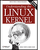
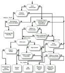

Understanding the Linux Kernel, 3rd Edition

It's official: the third edition of Understanding the Linux Kernel, by Daniel P. Bovet and Marco Cesati, is out. Your editor was pleased to receive a copy of this 900-page monster, delivered by a company which specializes in other sorts of heavy loads, such as pianos. UTLK 3 was some time in coming, but it is a welcome arrival.As one would expect, this version of UTLK covers the 2.6 kernel. Your editor would like to point out to kernel-oriented publishers, however, that simply saying "2.6" is not particularly informative. A wide variety of kernels have come out under the 2.6 name. Readers will want to know which 2.6 kernel is covered by a given book, and they would rather not have to dig for that information. As it turns out, the reader who gets far enough into the introduction will discover that UTLK 3 was written for the 2.6.11 kernel.

Indeed, that is perhaps the key feature which differentiates this book. It is very much a "how it works" book, designed to help people understand the code. It is not, however, a "how to hack it" book like Linux Device Drivers or Linux Kernel Development. It presents kernel functions and data structures, steps the reader through them, but does not, for example, emphasize the rules for using them. UTLK is a study guide, not a programming manual.
But it is an effective and useful study guide. It covers a wide range of topics, including memory management, process management, scheduling, signals, the virtual filesystem, timing, the I/O layers, and more. Even with its weight, this book cannot cover everything, however; omitted topics include networking, security (security modules, key management, etc.), specific device drivers, sound, video, the kernel build system, and all of the other architectures supported by Linux. (For what it's worth, O'Reilly is said to have an "understanding the Linux network stack" book in the works now).
Certainly, there are things your editor would have done differently. There
are some minor technical glitches; for example, the book claims that
acquiring a semaphore always involves putting the acquiring process to
sleep first, which is very much not the case. The discussion of sleeping
starts with sleep_on(), and only later mentions that
sleep_on() is not a recommended interface. The discussion of some
interesting topics (direct I/O, for example) is overly short. But, as a
whole, the book is excellent, and the kernel function index at the end
helps to make it a useful reference. There is a space on your editor's "L1
bookshelf" (the one reachable without moving the chair) for UTLK 3.
| Index entries for this article | |
|---|---|
| Kernel | Books |
Posted Dec 1, 2005 6:19 UTC (Thu)
by conehead (guest, #7552)
[Link] (1 responses)
Posted Dec 1, 2005 12:59 UTC (Thu)
by smitty_one_each (subscriber, #28989)
[Link]
Posted Dec 1, 2005 6:36 UTC (Thu)
by nurhussein (guest, #16226)
[Link] (2 responses)
Posted Dec 1, 2005 22:13 UTC (Thu)
by fwenzel (guest, #33783)
[Link]
Posted Dec 10, 2005 13:46 UTC (Sat)
by nurhussein (guest, #16226)
[Link]
I was wondering what other Linux-related books people have on their L1Understanding the Linux Kernel, 3rd Edition
bookshelf. The last time I had my hands in kernel guts was around
2.1.126, I'd like to start tinkering again and it would be useful to
have something that could get me up to speed with the current kernel.
Robert Love's stuff is also good.Understanding the Linux Kernel, 3rd Edition
My copy is in transit from Amazon.com. Oh the agony of waiting for international shipping ... during holiday season :(Understanding the Linux Kernel, 3rd Edition
I had the university library order it for me and am also still waiting. What a pain! ;)Understanding the Linux Kernel, 3rd Edition
It arrived yesterday! Oh sweet joy :)Understanding the Linux Kernel, 3rd Edition